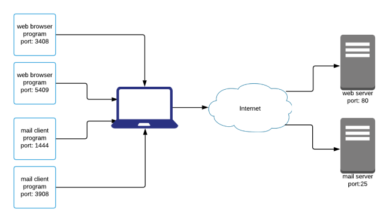
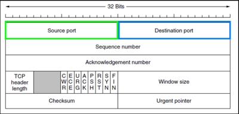
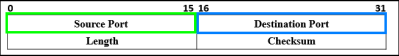

Ports
When an IP datagram reaches a host, the transport layer to know what the
destination process is use the
portsPort: identify a single network
process on a device. To identify a process on a network, you need to know the <IP>:<Port>
pair
Each common protocol
most of the time use well known ports(range: 0-1023)
Daemon:
Programs that run a service(with is protocol) on a server, they use well known ports most of the
time
change default ports of a daemon:
system administrators can also change the daemon configuration, changing the port of a service that listens for a
connection. In this way for a hacker is a little bit harder to recognize a
service.
examples:
| protocol |
port assignment |
description |
| SMTP |
25 |
|
| SSH |
22 |
|
| POP3 |
110 |
|
| IMAP |
143 |
|
| HTTP |
80, 8080 |
|
| HTTPS |
443 |
|
| DNS |
53 |
|
| NETBIOS |
137,138,139 |
|
| SFTP |
115 |
|
| Telnet |
23 |
wait for a client remote console terminal connection (server) |
| FTP |
21 |
|
| RDP |
3389 |
|
| MySQL |
3306 |
|
| MS SQL Server |
1433 |
|
server and client applications to know which port to use have two fields in the TCP or UDP
header: the
source port and
destination port
TCP header
UDP header
bibliografy images:
https://cysecguide.blogspot.com/2018/04/tcp-udp-header.html